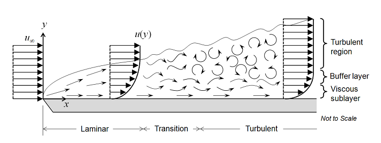

Notes on Turbulence Modeling
Contents
Boundary Layers and Flow Regimes¶Fluid flow fields illustrate several types of behavior based on the Reynolds number and the proximity to disturbances such as surfaces or solid objects. These are typically accounted for by boundary layer theory, which posits that many or most quantifiable effects of fluids are due to the viscous layer adjoining the interface. Indeed, many properties of fluid flows are notably different in the boundary layer from their characteristics in the bulk flow. Many of the simulation we have conducted up to this point have been laminar—that is, the streamlines tend to run in parallel layers next to the surfaces and cross currents, eddies, and mixing do not occur. In contrast, turbulent flow is chaotic and exhibits nonzero velocities in all directions, nonzero shear stresses, and time-varying behavior. Turbulence is characterized by a cascade of large eddies breaking into smaller and smaller eddies at a variety of length scales. (Thus kinetic energy is transported from the larger length scales to the shorter length scales until it dissipates near the molecular level.)[Nepf2008]  The Navier–Stokes Equations and Direct Numerical Simulation¶As you have seen in your fluid mechanics coursework, a full description of any fluid flow is given by the full Navier–Stokes equations. The NS equations describe a continuous fluid whose fields are all differentiable at all points; in other words, they describe the conservation of momentum in a fluid flow field. The equations together account for viscosity, anisotropic effects, and compressibility; their solution is a vector field describing the fluid velocity at any given point. The most general statement of the Navier–Stokes equations for a compressible fluid[Foias2001], [derivation] is $$\rho \left(\frac{\partial \mathbf{u}}{\partial t} + \mathbf{u} \cdot \nabla \mathbf{u} \right) = -\nabla \bar{p} + \mu \nabla^2 \mathbf u + \tfrac13 \, \mu \nabla (\nabla\cdot\mathbf{u}) + \rho \mathbf{g} .$$for fluid velocity $\mathbf{u}(\mathbf{x}, t)$, density $\rho$, dynamic viscosity $\mu$ (constant), thermodynamic pressure $\bar{p} \equiv p - \zeta \nabla \cdot \mathbf{u}$, and acceleration due to gravity $\mathbf{g}$. The solution of the multidimensional nonlinear partial differential equation (and the associated conservation equations for mass and energy, equations of state, etc.) is nontrivial, to say the least. Many approximations in routine usage are employed to simplify the equations by excluding irrelevant physics (such as anisotropicity or non-Newtonian flow) or by averaging certain properties over the entire flow. Some types of basic flows even have all nonlinear components equal to zero, permitting analytical solution[Wang1991]. If one has the computational power available to resolve an extremely fine mesh and time step size, then direct numerical simulation (DNS) becomes possible. In this case, the full Navier–Stokes equations are solved numerically over the grid (for very short time scales). |
Turbulence Models¶Overview¶A variety of strategies have been developed for dealing with turbulent flows, including the use of mean flow variables $\bar{u}$ coupled with fluctuating variables $u'$. Another approach is to include an effective eddy viscosity $\varepsilon$ to model the friction losses of the flow due to the turbulent eddies. Similarly, a friction factor can be included as a semi-empirical effect (if specific velocity flow profiles, shear stresses, and other specific properties of the flow are not required). (Friction factors are what I learnt to use in my introduction to fluid dynamics course years ago.)[Nepf2008] Further complicating flow physics, two distinct model regimes are required in space: the boundary layer near the wall is dominated by viscous effects and laminar shear, whereas away from the wall, turbulent shear dominates the flow. Thus a model which applies well in one domain often fails in the other, requiring an overlapping treatment. One strategy for dealing with boundary-layer physics (which we'll see more of below) is to employ wall functions[Segal1996]: analytical velocity profile laws which compensate for the inability of bulk-flow turbulence equations to accurately reproduce empirical results. In practice, turbulence modeling typically involves adding one or more additional degrees of freedom, such as turbulent kinetic energy $k$, and corresponding governing equation(s) to the system. This addition allows the system to relax into a solution (hopefully) closer to experimental observations under chaotic conditions. There are several ways to classify turbulence models: by the number of additional equations they add to the system, by the effects over which they average, etc. We here distinguish three classes: Reynolds-averaged simulations, large eddy/detached eddy simulations, and direct numerical simulation (which is theoretically but not practically possible in Fluent[bbs]). Reynolds Time-Averaged Navier–Stokes (RANS) Equations[CFD-Wiki]¶Reynolds time-averaged turbulence models are steady-state models designed to yield transport quantities across all scales of turbulence. RANS implements mean flow variables $\bar{u}$ and fluctuating variables $u'$ in order to capture large- and small-scale characteristics of the flow. The use of time-averaged mean flow variables necessarily implies that RANS solutions are steady-state. If transient solutions are needed, one can use URANS (unsteady RANS) to obtain averaged "ensemble" solutions (i.e., they are not pointwise correct but represent a sort of average solution in time).[bbs] Linear Eddy Viscosity Modeling¶One-Equation Models¶One-equation models compensate by adding a single term such as a pseudoviscosity as a supplementary equation. Spalart–Allmaras[CFD-Wiki], [NASA]¶The Spalart–Allmaras model introduces a pseudoviscosity $\tilde{v}$ into the system to account for the friction losses of the turbulent eddies. No wall functions are required and small near-wall gradients are produced by this model. In addition, the Spalart–Allmaras model has low memory requirements, is computationally stable and tends to converge rapidly, and is less sensitive to numerical error from a non-layered mesh near the wall. However, it is inaccurate for shear flow, separated flow, or decaying turbulence. Two-Equation Models¶Two-equation models typically include the turbulent kinetic energy $k$. They are better at accounting for history effects in the flow field, such as the convection and diffusion of turbulent energy. They tend to strike a good balance between computational efficiency and accuracy. However, no current two-equation approach can handle buffer layer flow well, in which both Reynolds and viscous stresses are prominent; thus, wall functions are often invoked. $k$-$\epsilon$[CFD-Wiki]¶The $k$-$\epsilon$ model is a classic and often-used turbulence model. It is called $k$-$\epsilon$ because it introduces the variables turbulent kinetic energy $k$ and the rate of dissipation of kinetic energy $\epsilon$. $k$-$\epsilon$ works best for free-shear layer flows with small pressure gradients, and requires wall functions because the buffer region flow is not simulated. $k$-$\epsilon$ has low memory requirements and demonstrates good convergence properties. However, it is inaccurate for adverse pressure gradients, strong curvature, and jet flow. $k$-$\epsilon$ is valid only for fully turbulent flow and should not be used when laminar flow is present in part of the system. Renormalization Group $k$-$\epsilon$[CFD-Wiki]¶RNG $k$-$\epsilon$ reformulates the $k$-$\epsilon$ equations with attention to the varying length scale of the relevant turbulent flow. This makes it generally more accurate and reliable than $k$-$\epsilon$, for rotating flows (including time-dependent turbulent vortex shedding) and especially rotating cavities, as well as favorable for indoor air simulations. RNG $k$-$\epsilon$ is inaccurate for vortex evolution and unstable in steady-state solutions, and generally requires 10–15% more CPU time than $k$-$\epsilon$. Realizable $k$-$\epsilon$[CFD-Wiki], [Wikipedia]¶Realizable $k$-$\epsilon$ reformulates the turbulent kinetic energy equations with an eye to satisfying certain mathematical constraints better. It performs better for rotation, strong adverse pressure gradients, recirculation, mixing, channel and boundary layer flows. In particular, it predicts spreading rate around planar and round jets, which other turbulence models typically struggle to capture. However, it tends to produce a nonphysical turbulent viscosity in situations with both rotating and stationary fluid zones (that is, systems with multiple reference frames). $k$-$\omega$[CFD-Wiki], [NASA]¶The $k$-$\omega$ models, like the $k$-$\epsilon$ models, incorporate two equations. $k$ is the turbulent kinetic energy and $\omega$ is the specific dissipation rate. There are no wall functions and low memory requirements; additionally, $k$-$\omega$ is often accurate where $k$-$\epsilon$ fails. However, $k$-$\omega$ is inaccurate for adverse pressure gradients, strong curvature, and jet flow as well as being oversensitive to inlet free-stream turbulence and being sensitive to the initial guess. Shear Stress Transport $k$-$\omega$[CFD-Wiki]¶SST $k$-$\omega$ uses a $k$-$\omega$ formulation near the wall in the boundary layer but switches to a SST $k$-$\epsilon$-like behavior in the free-stream flow. (This diminishes the oversensitivity to the inlet free-stream turbulence.) SST $k$-$\omega$ tends to be accurate near the wall but overestimates turbulence in regions with large normal strain. It is often cited for behaving well in regions with separating flow. SST $k$-$\omega$ also tends to converge slowly, so it is often convenient to use another model for the initial guess. Reynolds Stress Transport Model (RSM)[CFD-Wiki]¶The Reynolds stress transport model introduces the turbulent kinetic energy $k$ and the rate of dissipation of kinetic energy $\omega$. RSM is particularly suited for describing anisotropic turbulence, such as highly swirling flows and stress-driven secondary flows. It is moderately computationally expensive (expect to use 50–60% more CPU time and 15–20% more memory over $k$–$\epsilon$ modeling), and it tends to converge slowly. Detached Eddy Simulation (DES)[CFD-Wiki]¶Detached eddy simulations are a hybrid treatment using a RANS approach (typically Spalart–Allmaras) near the wall and an LES approach in the bulk flow. However, a complicated grid generation procedure is required for this method to be effective. Large Eddy Simulation (LES)[CFD-Wiki]¶Large eddy simulations have become popular as a compromise between DNS and the computational efficiency of the RANS models. LES introduces the Smagorinsky constant $C_S$ to help resolve large scales in the flow field while modeling small scales instead of directly solving them. (This gives it its speed edge over DNS.) However, there are challenges in determining $C_S$ and the method is still quite computationally expensive compared to simpler turbulence models. Direct Numerical Simulation (DNS)¶In principle, Fluent could effect a direct numerical solution of the full Navier–Stokes equations by using a time-varying laminar flow model with an incredibly fine grid ($\lesssim 10 \,\mu\text{m}$) and a very short time step ($10^{-10} \,\text{s}$). Of course, you'd never do this in practice since the computational and memory requirements are absolutely prohibitive. (As a trivial aside, the Navier–Stokes equations have not been proven to properly handle turbulence[Wikipedia], although this conjecture is widely accepted and supported by practical experience. This says more about our understanding of turbulence than it does about the Navier–Stokes equations.) |
Credits
Neal Davis developed these materials for Computational Science and Engineering at the University of Illinois at Urbana–Champaign.
 This content is available under a Creative Commons Attribution-NonCommercial 4.0 Unported License.
This content is available under a Creative Commons Attribution-NonCommercial 4.0 Unported License.